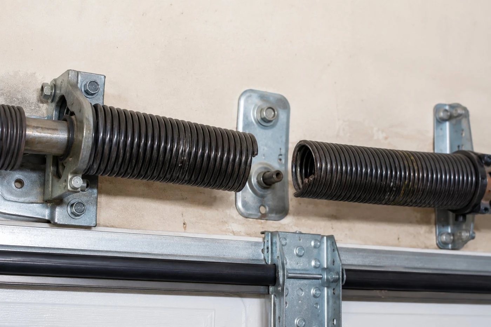

The signs of a broken garage door spring
The door won't open
This is the most common presentation. The opener runs — you can hear the motor — but the door doesn't move, or it opens an inch or two and stops. Without the spring's counterbalance, the opener can't lift the door. Many people assume the opener has failed when the real issue is the spring.
The door is very heavy to lift manually
A properly balanced garage door should feel almost weightless when you lift it manually — the spring counterbalance does most of the work. If the door feels like it weighs 100+ pounds when you try to lift it, the spring is likely broken or very weak. Don't try to force it up.
You heard a loud bang
A torsion spring breaking sounds like a gunshot or a loud crack. It's often heard from inside the house — sometimes in the middle of the night. A lot of Columbus homeowners wake up to this sound and don't know what happened until the next morning when the door won't open.
There's a visible gap in the spring
Look above the garage door at the horizontal shaft that runs across the opening. If there's a torsion spring on that shaft, look for a gap in the coil — a break where the two halves of the spring have separated. A broken torsion spring will have a clearly visible gap of two or more inches in the middle of the coil.
The door opens crooked
If one of two springs has broken, the door may still open — partially, unevenly, or with one side higher than the other. This is common on double-car doors with two torsion springs. The intact spring can lift its side but not compensate fully for the missing spring on the other side.

"Most people who call us about a broken spring have been hearing warning signs for weeks — grinding, squealing, the door slowing down slightly at the top of its travel. Springs don't usually fail without warning. When we replace a spring in Columbus, we ask how long the door has been making noise. Nine times out of ten the answer is 'a few months.' The noise is metal fatigue. The bang is when it finally goes."
What to do — and what not to do
- Do not try to operate the door with the opener if you suspect a broken spring — you risk damaging the opener and the hardware.
- Do not try to lift the door manually to get your car out — without spring counterbalance, the door is extremely heavy and can fall suddenly.
- Do leave the door in whatever position it's in — closed is safer than open from a security standpoint.
- Do call us — spring replacement is a same-day repair in most cases and we carry springs sized for most Columbus residential doors.
- If the door is stuck in the open position, prioritize the call — a door that can't close is a security issue.
Spring questions
Can I replace the spring myself?
We strongly advise against it. Torsion springs are under several hundred pounds of tension. Incorrect installation causes serious injuries. This is one repair that should not be DIY'd.
How much does spring replacement cost?
Torsion spring replacement in Columbus runs $150–$350 depending on spring size and whether both are replaced. Written quote before work starts.
How long until you can get here?
For most Columbus and Franklin County addresses, same-day service is available. Call us at (740) 527-8686 and we'll give you an arrival window.
Should I replace both springs?
Yes. If one has failed, the other is at the same point in its lifecycle. Replacing both at once avoids a second service call in a few weeks.